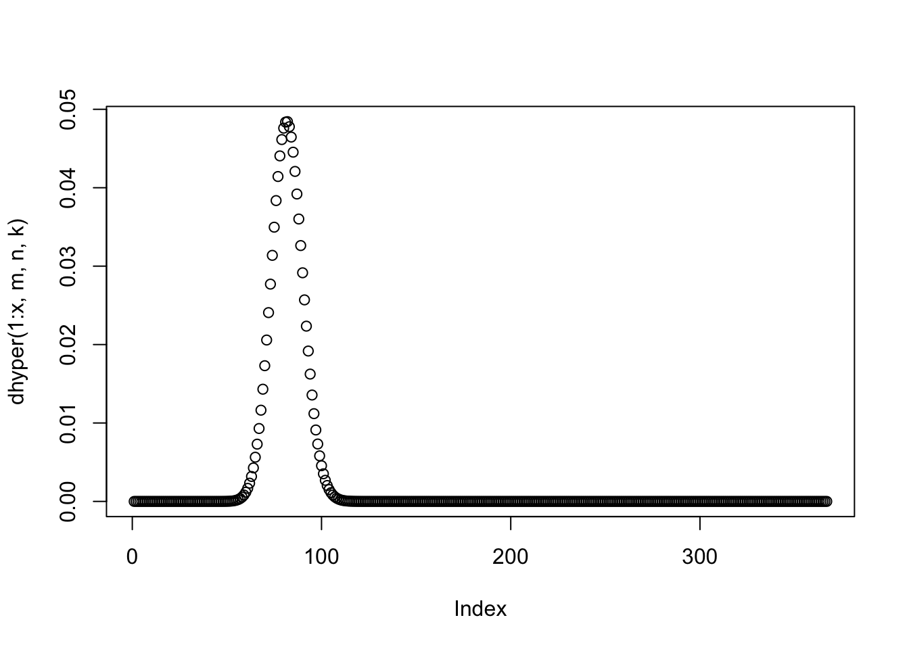
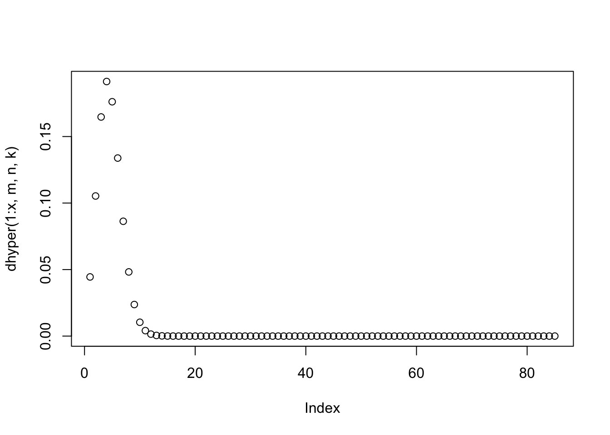
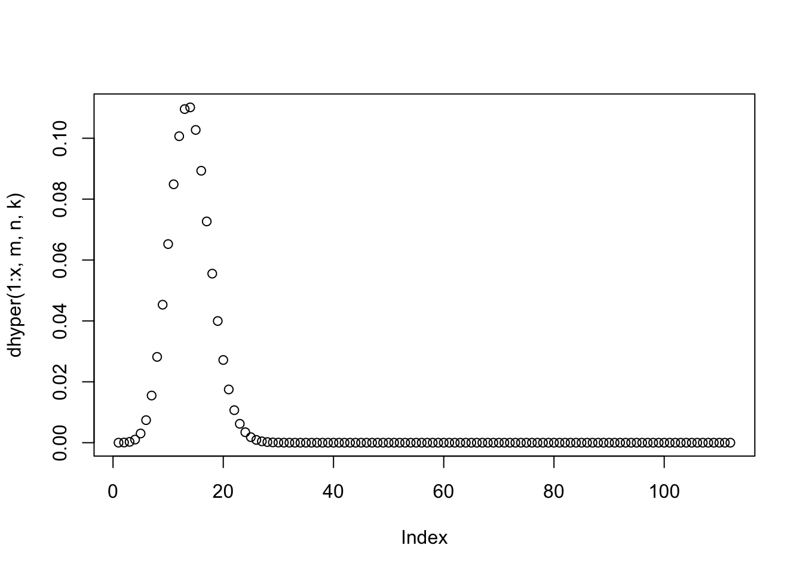

Calculating the observed versus expected from Figure 3 Pai et al. 2011
m <- 470+367
n <- 9911-(470+367)
x <- 367
q = x
k <- (603+367)
phyper(q, m, n, k, lower.tail = FALSE)## [1] 5.41205e-170dhyper(1:x, m, n, k)## [1] 6.188428e-38 3.092244e-36 1.027671e-34 2.555483e-33 5.071750e-32
## [6] 8.368283e-31 1.180707e-29 1.454214e-28 1.588305e-27 1.557589e-26
## [11] 1.385314e-25 1.126740e-24 8.439257e-24 5.855531e-23 3.782947e-22
## [16] 2.285753e-21 1.296769e-20 6.931604e-20 3.501745e-19 1.676558e-18
## [21] 7.626433e-18 3.303531e-17 1.365483e-16 5.395922e-16 2.042068e-15
## [26] 7.413002e-15 2.585111e-14 8.672026e-14 2.802020e-13 8.730654e-13
## [31] 2.626207e-12 7.634289e-12 2.146788e-11 5.845049e-11 1.542199e-10
## [36] 3.946385e-10 9.801655e-10 2.364593e-09 5.544597e-09 1.264517e-08
## [41] 2.806669e-08 6.066333e-08 1.277542e-07 2.622839e-07 5.252173e-07
## [46] 1.026338e-06 1.958079e-06 3.648830e-06 6.644281e-06 1.182750e-05
## [51] 2.059025e-05 3.506865e-05 5.845546e-05 9.539662e-05 1.524722e-04
## [56] 2.387483e-04 3.663695e-04 5.511376e-04 8.130000e-04 1.176344e-03
## [61] 1.669978e-03 2.326672e-03 3.182143e-03 4.273387e-03 5.636346e-03
## [66] 7.302936e-03 9.297588e-03 1.163353e-02 1.430915e-02 1.730482e-02
## [71] 2.058064e-02 2.407543e-02 2.770734e-02 3.137631e-02 3.496817e-02
## [76] 3.836048e-02 4.142945e-02 4.405753e-02 4.614101e-02 4.759687e-02
## [81] 4.836827e-02 4.842822e-02 4.778104e-02 4.646152e-02 4.453201e-02
## [86] 4.207761e-02 3.920009e-02 3.601111e-02 3.262525e-02 2.915365e-02
## [91] 2.569839e-02 2.234826e-02 1.917594e-02 1.623654e-02 1.356756e-02
## [96] 1.118997e-02 9.110031e-03 7.321835e-03 5.809958e-03 4.552205e-03
## [101] 3.522156e-03 2.691377e-03 2.031234e-03 1.514274e-03 1.115184e-03
## [106] 8.113811e-04 5.832788e-04 4.143212e-04 2.908330e-04 2.017580e-04
## [111] 1.383353e-04 9.375283e-05 6.280843e-05 4.159742e-05 2.723715e-05
## [116] 1.763336e-05 1.128802e-05 7.145618e-06 4.473331e-06 2.769623e-06
## [121] 1.696045e-06 1.027329e-06 6.155523e-07 3.648636e-07 2.139604e-07
## [126] 1.241366e-07 7.126158e-08 4.047865e-08 2.275289e-08 1.265644e-08
## [131] 6.967475e-09 3.796224e-09 2.047219e-09 1.092788e-09 5.774164e-10
## [136] 3.020275e-10 1.563976e-10 8.017916e-11 4.069695e-11 2.045278e-11
## [141] 1.017779e-11 5.015168e-12 2.447195e-12 1.182558e-12 5.659348e-13
## [146] 2.682376e-13 1.259218e-13 5.855028e-14 2.696633e-14 1.230262e-14
## [151] 5.559994e-15 2.489253e-15 1.104077e-15 4.851565e-16 2.112193e-16
## [156] 9.111101e-17 3.894127e-17 1.649177e-17 6.920830e-18 2.878051e-18
## [161] 1.186051e-18 4.843822e-19 1.960504e-19 7.864243e-20 3.126584e-20
## [166] 1.232031e-20 4.812001e-21 1.862929e-21 7.149028e-22 2.719516e-22
## [171] 1.025518e-22 3.833675e-23 1.420760e-23 5.220025e-24 1.901443e-24
## [176] 6.866973e-25 2.458846e-25 8.729576e-26 3.073003e-26 1.072637e-26
## [181] 3.712566e-27 1.274203e-27 4.336684e-28 1.463669e-28 4.898968e-29
## [186] 1.626127e-29 5.353070e-30 1.747676e-30 5.658989e-31 1.817386e-31
## [191] 5.788904e-32 1.828927e-32 5.731355e-33 1.781513e-33 5.492896e-34
## [196] 1.679979e-34 5.096902e-35 1.533973e-35 4.579814e-36 1.356456e-36
## [201] 3.985658e-37 1.161824e-37 3.359966e-38 9.640351e-39 2.744244e-39
## [206] 7.750558e-40 2.171861e-40 6.038489e-41 1.665827e-41 4.559790e-42
## [211] 1.238458e-42 3.337698e-43 8.925857e-44 2.368633e-44 6.237319e-45
## [216] 1.629890e-45 4.226549e-46 1.087648e-46 2.777620e-47 7.039576e-48
## [221] 1.770584e-48 4.419667e-49 1.094896e-49 2.691988e-50 6.568966e-51
## [226] 1.590931e-51 3.824216e-52 9.123826e-53 2.160535e-53 5.078106e-54
## [231] 1.184690e-54 2.743317e-55 6.305536e-56 1.438629e-56 3.258082e-57
## [236] 7.324327e-58 1.634451e-58 3.620594e-59 7.961550e-60 1.737924e-60
## [241] 3.766036e-61 8.101483e-62 1.730120e-62 3.667961e-63 7.719968e-64
## [246] 1.613072e-64 3.346141e-65 6.891161e-66 1.408974e-66 2.860100e-67
## [251] 5.764101e-68 1.153345e-68 2.291229e-69 4.519230e-70 8.850168e-71
## [256] 1.720815e-71 3.322135e-72 6.368028e-73 1.211997e-73 2.290402e-74
## [261] 4.297733e-75 8.007353e-76 1.481374e-76 2.721262e-77 4.963753e-78
## [266] 8.990591e-79 1.616994e-79 2.887849e-80 5.121422e-81 9.019037e-82
## [271] 1.577202e-82 2.738894e-83 4.723109e-84 8.088144e-85 1.375440e-85
## [276] 2.322788e-86 3.895439e-87 6.487617e-88 1.072999e-88 1.762391e-89
## [281] 2.874731e-90 4.656797e-91 7.491619e-92 1.196921e-92 1.899151e-93
## [286] 2.992687e-94 4.683530e-95 7.279453e-96 1.123674e-96 1.722666e-97
## [291] 2.622912e-98 3.966348e-99 5.956967e-100 8.885658e-101 1.316396e-101
## [296] 1.936951e-102 2.830664e-103 4.108641e-104 5.923122e-105 8.481022e-106
## [301] 1.206127e-106 1.703678e-107 2.390200e-108 3.330696e-109 4.609908e-110
## [306] 6.337356e-111 8.653359e-112 1.173611e-112 1.580987e-113 2.115435e-114
## [311] 2.811510e-115 3.711509e-116 4.866694e-117 6.338582e-118 8.200240e-119
## [316] 1.053754e-119 1.345029e-120 1.705320e-121 2.147649e-122 2.686617e-123
## [321] 3.338372e-124 4.120518e-125 5.051944e-126 6.152567e-127 7.442980e-128
## [326] 8.943991e-129 1.067607e-129 1.265867e-130 1.490949e-131 1.744364e-132
## [331] 2.027271e-133 2.340392e-134 2.683912e-135 3.057401e-136 3.459725e-137
## [336] 3.888995e-138 4.342507e-139 4.816729e-140 5.307296e-141 5.809047e-142
## [341] 6.316083e-143 6.821862e-144 7.319327e-145 7.801055e-146 8.259432e-147
## [346] 8.686853e-148 9.075927e-149 9.419685e-150 9.711791e-151 9.946733e-152
## [351] 1.012000e-152 1.022821e-153 1.026925e-154 1.024232e-155 1.014796e-156
## [356] 9.988049e-158 9.765719e-159 9.485274e-160 9.152043e-161 8.772209e-162
## [361] 8.352626e-163 7.900607e-164 7.423718e-165 6.929569e-166 6.425620e-167
## [366] 5.918994e-168 5.416328e-169max(dhyper(1:x, m, n, k))## [1] 0.04842822plot(dhyper(1:x, m, n, k))
which(grepl(max(dhyper(1:x, m, n, k)), dhyper(1:x, m, n, k)))## [1] 82m <- 85+127
n <- 9911-(85+127)
x <- 85
q = x
k <- (129+85)
phyper(q, m, n, k, lower.tail = FALSE)## [1] 2.782087e-92dhyper(1:x, m, n, k)## [1] 4.445744e-02 1.053047e-01 1.647050e-01 1.913618e-01 1.761577e-01
## [6] 1.338305e-01 8.630377e-02 4.822370e-02 2.371735e-02 1.039492e-02
## [11] 4.100806e-03 1.468228e-03 4.803961e-04 1.444916e-04 4.015346e-05
## [16] 1.035507e-05 2.487771e-06 5.586991e-07 1.176456e-07 2.329086e-08
## [21] 4.345816e-09 7.659420e-10 1.277714e-10 2.021077e-11 3.036503e-12
## [26] 4.339879e-13 5.908983e-14 7.674509e-15 9.519633e-16 1.129049e-16
## [31] 1.281699e-17 1.394009e-18 1.453951e-19 1.455497e-20 1.399583e-21
## [36] 1.293719e-22 1.150384e-23 9.846837e-25 8.118479e-26 6.451101e-27
## [41] 4.943301e-28 3.654718e-29 2.608321e-30 1.797810e-31 1.197282e-32
## [46] 7.707322e-34 4.797765e-35 2.889140e-36 1.683640e-37 9.497955e-39
## [51] 5.188628e-40 2.745686e-41 1.407838e-42 6.996472e-44 3.370894e-45
## [56] 1.574925e-46 7.137192e-48 3.137949e-49 1.338778e-50 5.543763e-52
## [61] 2.228526e-53 8.698161e-55 3.296927e-56 1.213765e-57 4.340812e-59
## [66] 1.508279e-60 5.092455e-62 1.670952e-63 5.328990e-65 1.652039e-66
## [71] 4.978936e-68 1.458941e-69 4.156847e-71 1.151738e-72 3.103429e-74
## [76] 8.133177e-76 2.073188e-77 5.140488e-79 1.239885e-80 2.909322e-82
## [81] 6.641332e-84 1.474988e-85 3.187179e-87 6.700723e-89 1.370705e-90max(dhyper(1:x, m, n, k))## [1] 0.1913618plot(dhyper(1:x, m, n, k))
which(grepl(max(dhyper(1:x, m, n, k)), dhyper(1:x, m, n, k)))## [1] 4m <- 112+240
n <- 9911-(112+240)
x <- 112
q = x
k <- (282+112)
phyper(q, m, n, k, lower.tail = FALSE)## [1] 6.770081e-75dhyper(1:x, m, n, k)## [1] 7.306062e-06 5.497000e-05 2.742105e-04 1.020244e-03 3.020013e-03
## [6] 7.408323e-03 1.549051e-02 2.818346e-02 4.532510e-02 6.523604e-02
## [11] 8.487872e-02 1.006630e-01 1.095774e-01 1.101342e-01 1.027279e-01
## [16] 8.931978e-02 7.267625e-02 5.552922e-02 3.996413e-02 2.716669e-02
## [21] 1.748641e-02 1.068172e-02 6.205106e-03 3.434310e-03 1.814093e-03
## [26] 9.160044e-04 4.427812e-04 2.051745e-04 9.125295e-05 3.900042e-05
## [31] 1.603489e-05 6.348651e-06 2.422884e-06 8.920947e-07 3.171646e-07
## [36] 1.089685e-07 3.620654e-08 1.164268e-08 3.625695e-09 1.094158e-09
## [41] 3.201719e-10 9.089727e-11 2.505079e-11 6.705357e-12 1.744088e-12
## [46] 4.410295e-13 1.084717e-13 2.595993e-14 6.047961e-15 1.372162e-15
## [51] 3.032900e-16 6.533197e-17 1.372020e-17 2.810014e-18 5.614488e-19
## [56] 1.094713e-19 2.083573e-20 3.872223e-21 7.028711e-22 1.246437e-22
## [61] 2.160014e-23 3.658824e-24 6.059398e-25 9.813427e-26 1.554576e-26
## [66] 2.409335e-27 3.653982e-28 5.423845e-29 7.881417e-30 1.121345e-30
## [71] 1.562396e-31 2.132241e-32 2.850687e-33 3.734238e-34 4.793620e-35
## [76] 6.031168e-36 7.438425e-37 8.994258e-38 1.066390e-38 1.239916e-39
## [81] 1.414008e-40 1.581797e-41 1.735974e-42 1.869312e-43 1.975230e-44
## [86] 2.048332e-45 2.084864e-46 2.083036e-47 2.043161e-48 1.967611e-49
## [91] 1.860585e-50 1.727725e-51 1.575632e-52 1.411331e-53 1.241753e-54
## [96] 1.073274e-55 9.113607e-57 7.603423e-58 6.233054e-59 5.021090e-60
## [101] 3.974955e-61 3.092674e-62 2.365014e-63 1.777706e-64 1.313532e-65
## [106] 9.541198e-67 6.813548e-68 4.783847e-69 3.302475e-70 2.241734e-71
## [111] 1.496353e-72 9.822272e-74max(dhyper(1:x, m, n, k))## [1] 0.1101342plot(dhyper(1:x, m, n, k))
which(grepl(max(dhyper(1:x, m, n, k)), dhyper(1:x, m, n, k)))## [1] 14# Liver specific
which(grepl(max(dhyper(1:367, m=970, n=9911-970, k=837)), dhyper(1:367, m=970, n=9911-970, k=837)))## [1] 82phyper(367, m=970, n=9911-970, k=837, lower.tail = FALSE)## [1] 5.41205e-170# Kidney specific
which(grepl(max(dhyper(1:85, m=129+85, n=9911-129-85, k=127+85)), dhyper(1:85, m=129+85, n=9911-129-85, k=127+85)))## [1] 4phyper(85, m=129+85, n=9911-129-85, k=127+85, lower.tail = FALSE)## [1] 2.782087e-92# Heart specific
which(grepl(max(dhyper(1:112, m=282+112, n=9911-282-112, k=112+240)), dhyper(1:112, m=282+112, n=9911-282-112, k=112+240)))## [1] 14phyper(112, m=282+112, n=9911-282-112, k=112+240, lower.tail = FALSE)## [1] 6.770081e-75